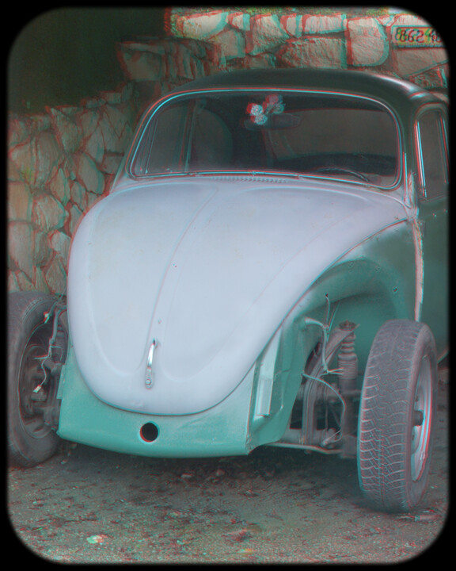

Anaglyph HALD Generator (Anahald) - Author's favorite pre-made HALD LUT-s
(this page has dark background to improve viewing experience with anaglyph samples)
By Oleg Kosyakovsky
Table of Contents
Anahald distribution includes four pairs of config + premade-HALD that the author used during development. They cover different color-and-content scenarios that arose in the author's reference "dataset" of 369 stereopairs.
Disclaimer: at the time of development and of writing this guide the author had no scientific or even orderly methodology to choose input configuration parameters. This was all trial-and-error iterations, and creation of such a methodology should be the central task of future work on Anahald.
The four HALD lookup tables supplied with Anahald
Anahald distribution has configuration files for the sample HALD-s in CFG/ directory, and resulting level-16 HALD-s could be downloaded from here
In order to see their control parameters at a glance, use Anahald utility "anahald_cfg_table" (the command of example below assumes BASH):
$ bin/anahald_cfg_table.sh GLOB "CFG/" "ahg_oleg_*"
...
-ID-|Green|MinBn|MaxRg|Smoot|PreSq|MinMi|PreIn|MaxBa
|ToBlu|dBala| bVal|hBndB|ueeze|norSc|flate|lance
|eBias|ncedM| |alanc|Major|aleOp|Minor|dMajo
|MultW|ajorT| |edOpt|ToFra| tion|ToFra|rToMa
|henMi|oMaxM| | ion| ct| | ct|xMino
| nor|inorR| | | | | |rRati
| | atio| | | | | | o
ahg_oleg_cp| 0.97| 1.5| 255| 2| 0.80| 2| 1.0| 3.0
ahg_oleg_ec| 1.0| 1.0| 255| 1| 0.90| 1| 1.0| 2.0
ahg_oleg_gp| 1.0| 1.3| 255| 2| 0.90| 2| 1.0| 2.0
ahg_oleg_sf| 0.85| 1.0| 255| 1| 1.00| 1| 0.50| 2.0
Please refer to Control Parameters Specification and/or Anahald algorithm and how to control it to refresh the meaning of the control parameters.
A HALD-LUT being an image by itself helps to illustrate the expected effect of the sample HALD-s. The example below generates small level-5 HALD-LUTs for all four sample config files and then shows them side-by-side.
The example runs in BASH both under Windows and under Linux; in order to play with it (not needed), just change the paths (Anahald-Root and Imagemagick-convert/magick) to match your system
cd <Anahald-Root> # the code assumes the current directory is the one
# where Anahald was unpacked
CFGDIR="CFG"; HALDDIR="TMP"
INP_GLOB="ahg_oleg_*.ini"
LEVEL=5
for inpCfg in "${CFGDIR}"/${INP_GLOB}; do inpName=$(basename -- "$inpCfg"); bin/anahald_lut_make.sh $inpCfg $LEVEL $HALDDIR; done
IMC="convert" # do adjust the path to Imagemagick convert/magick utility
LEVEL_STR="05"
HALD_GLOB="hald__ahg_oleg_*__${LEVEL_STR}.TIF"
for haldTif in "${HALDDIR}"/${HALD_GLOB}; do inpName=$(basename -- "$haldTif" .TIF); "$IMC" "$haldTif" "${HALDDIR}/${inpName}.PNG"; done
Figure 1: Identity HALD (above) and Anahald sample HALD-s (below) ordered by anount of color change - _CP -> _GP -> _EC -> _SF


When examining the HALD-LUT images above, pay attention to what happened to colors that were saturated in the identity HALD.
While it's tempting to look at them through red-cyan glasses, the disappointing (for the author :)) outcome would be the result. Specifics of the "thin" patterns arising from HALD format structure unfortunately prevents proper fusing and provoke retinal rivalry. The good news is that this phenomenon is not so frequent in the actual photography-originated stereopairs.
If insisting anyway, do recall: reviewing these color-balancing LUT-s imposes the same requirements on anaglyph glasses as stereo-picture viewing does.
The effect of sample HALD-LUT-s on cyan-red linear gradient is easier to grasp - both without- and with anaglyph glasses:
Figure 2: Cyan-red color gradient (above) and its conversions by Anahald sample HALD-s (below) ordered by anount of color change - _CP -> _GP -> _EC -> _SF
Illustrations on LUT choices for some sample stereopairs
This section demonstrates choices of Anahald LUT for several representative stereopairs - out of the four options supplied as the sample LUT-s.
All the examples are structured identically:
- the original stereopair at top-left - small size
- the author's favorite conversion as anaglyph at top-right - larger size; clicking it opens this image as a page of its own
- all four sample conversions as anaglyphs at the bottom - small size
Important tips for viewing:
- the close environment of anaglyph pictures on this page is far from being optimal - text and other images instead of wide black border
- do not try to asses retinal-rivalry by judging small-size images; only use red-cyan glasses with the larger (the chosen) one
- even then, let yourself some 2-3 seconds to accommodate with each image before claiming retinal-rivalry. The usual requirements from the glasses apply here too
- alternatively, for the best viewing experience, click the chosen-conversion image (top-right) to open as a separate page; for other options just copy the relevant pictures into a proper image viewer
The following two examples of conversions with "Color-Preserve" LUT show what can happen to red-like color.
Color-Preserve LUT - #1 - red-like color with green channel being stronger than blue channel remains visually red.
|Top-Left:::::Original-stereopair - - - - - - - - - - - - - - - - - - - Anahald-Config-Color-Preserve:::::Top-Right|
|Bottom-Left::::: Color-Preserve - - - - -> General-Purpose - - - - -> Eye-Comfort - - - - -> Small-Flowers:::::Bottom-Right|Color-Preserve LUT - #2 - red-like color with green- and blue channels nearly equal ends-up visually pink because of green-blue-bias value of 0.97.
|Top-Left:::::Original-stereopair - - - - - - - - - - - - - - - - - - - Anahald-Config-Color-Preserve:::::Top-Right|
|Bottom-Left::::: Color-Preserve - - - - -> General-Purpose - - - - -> Eye-Comfort - - - - -> Small-Flowers:::::Bottom-Right|And next comes a very rare green-dominated stereopair; the problematic region is to the left of the front-left wheel; though retinal-rivalry is less obvious compared to typical red-dominated cases.
Color-Preserve LUT - #3 - green-dominated. Despite that retinal-rivalry is rather tolerable, the balanced version is more pleasant to the eye.
|Top-Left:::::Original-stereopair - - - - - - - - - - - - - - - - - - - Anahald-Config-Color-Preserve:::::Top-Right|

|Bottom-Left::::: Color-Preserve - - - - -> General-Purpose - - - - -> Eye-Comfort - - - - -> Small-Flowers:::::Bottom-Right|
The following two are examples of conversions with "General-Purpose" LUT
General-Purpose LUT - #1.
|Top-Left:::::Original-stereopair - - - - - - - - - - - - - - - - - - - Anahald-Config-General-Purpose:::::Top-Right|
|Bottom-Left::::: Color-Preserve - - - - -> General-Purpose - - - - -> Eye-Comfort - - - - -> Small-Flowers:::::Bottom-Right|General-Purpose LUT - #2 - … though some readers may prefer the Eye-Comfort LUT instead…
|Top-Left:::::Original-stereopair - - - - - - - - - - - - - - - - - - - Anahald-Config-General-Purpose:::::Top-Right|
|Bottom-Left::::: Color-Preserve - - - - -> General-Purpose - - - - -> Eye-Comfort - - - - -> Small-Flowers:::::Bottom-Right|
The below examples of conversions with "Eye-Comfort" LUT illustrate two different scenarios it happened to serve.
Eye-Comfort LUT - #1 - the conversion chosen is the "weakest" out of what's available that managed to suppress retinal-rivalry with the large red flower. As a matter of fact, this picture needs dual-layer glasses for being fused. It was made for 3DTV, which allowed slightly more depth. But it tells its story despite some cross-talk.
|Top-Left:::::Original-stereopair - - - - - - - - - - - - - - - - - - - Anahald-Config-Eye-Comfort:::::Top-Right|
|Bottom-Left::::: Color-Preserve - - - - -> General-Purpose - - - - -> Eye-Comfort - - - - -> Small-Flowers:::::Bottom-Right|
Eye-Comfort LUT - #2 - the choice of conversion exploits long linear slope in conversion strength of the Eye-Comfort LUT to gradually desaturate burned-out red channel in the flowers and thus hide this exposure defect.

|Top-Left:::::Original-stereopair - - - - - - - - - - - - - - - - - - - Anahald-Config-Eye-Comfort:::::Top-Right|
|Bottom-Left::::: Color-Preserve - - - - -> General-Purpose - - - - -> Eye-Comfort - - - - -> Small-Flowers:::::Bottom-Right|
{kind=link}
{kind=link}
{kind=link}
{kind=link}
{kind=link}
{kind=link}
{kind=link}
Unsurprisingly, the two examples of conversions with "Small-Flowers" LUT below deal with … flowers. It's indeed intended for showing saturated-color flowers on mostly green background, so that they appear nearly neutral. Sounds odd, but this LUT does better than both standard conversions - half-color and Dubois, and than the other three sample Anahald LUTs. The former would leave these flowers almost black, while the latter would fail to prevent retinal-rivalry.
Small-Flowers LUT - #1 - a bunch of tiny red flowers hanging in front of the screen … Just be sure you can fuse this image; move backward or scale it down if needed.
|Top-Left:::::Original-stereopair - - - - - - - - - - - - - - - - - - - Anahald-Config-Small-Flowers:::::Top-Right|
|Bottom-Left::::: Color-Preserve - - - - -> General-Purpose - - - - -> Eye-Comfort - - - - -> Small-Flowers:::::Bottom-Right|
Small-Flowers LUT - #2 - even though the flower is both small and doesn't constitute centre of interest, it destroys stereo-viewing experience if left unbalanced. And if it was the centre of interest, it would prompt the author to make an additional LUT - with even stronger degree of balancing applied - to fully eliminate retinal-rivalry with this flower.
|Top-Left:::::Original-stereopair - - - - - - - - - - - - - - - - - - - Anahald-Config-Small-Flowers:::::Top-Right|
|Bottom-Left::::: Color-Preserve - - - - -> General-Purpose - - - - -> Eye-Comfort - - - - -> Small-Flowers:::::Bottom-Right|
{kind=link}
{kind=link}
Anahald versus anaglyph options in StereoPhotoMaker
And finally one more example - all conversions available in StereoPhotoMaker versus Anahald sample LUT-s. The author considers a conversion to be "standard" if it is both freely available and documented.
StereoPhotoMaker offers four choices:
- Half-color - standard
It was the author's primary choice of stereophoto output prior to the "stereobum" of 2010-s - when options superior to anaglyph were temporarily available.
Colors with no red presence are more or less in touch with reality, but reds become nearly black, sometimes up to loss of shape - Dubois - standard
Colors are mostly off, but all the details manage to preserve their shapes - Suto - undocumented
Probably named after the creator of StereoPhotoMaker :).
The outputs resemble those from Anahald in the aspect of preserving initially balanced colors - SPM - undocumented
The two standard conversions are "bullet-proof" in fighting retinal rivalry.
The two undocumented conversions, like Anahald, do better job in preserving colors, but not always succeed to prevent retinal rivalry.

|Top-Left::::: Anaglyph-option-Half-Color - - - - -> Anaglyph-option-Dubois - - - - -> Anaglyph-option-Suto - - - - -> Anaglyph-option-SPM:::::Top-Right|
{kind=link}
|Middle-Left:::::Original-stereopair - - - - - - - - - - - - - - - - - - - Anahald-Config-Eye-Comfort:::::Middle-Right|
|Bottom-Left::::: Color-Preserve - - - - -> General-Purpose - - - - -> Eye-Comfort - - - - -> Small-Flowers:::::Bottom-Right|
The author's verdict for this comparison is:
- out of the four offerings from StereoPhotoMaker only Dubois is usable
- out of the four Anahald sample LUTs the choice is between the "Eye-Comfort" and the "Small-Flowers"
- over all the "Eye-Comfort" wins due to colors being closer to reality, even though Dubois did better to preserve differrent coloring of the front region when viewed through the glasses.
… So, there is light coming from the end of a tunnel. Literally :) …
More LUT's that should be there?
Working on the sample gallery for Anahald revealed a need for two more LUTs. Their configuration files are placed under CFG/ADD/ subdirectory, and filenames of actual demo images and their EXIF comments include references to the HALDs being used. The additional HALDs are silently included with the examples of Anbahald-generatated HALD-LUTs.
- "Moderate-Correction" (_mc) HALD is a proliferation of the "Color-Preserve" - with wider range of colors considered unbalanced.
The need for the "_mc" LUT arouse from viewing anaglyphs on HDTV, where the user's ability to switch off automatic color optimization altogether is questionable at best. - "eXtreme-Correction" (_xc) HALD is a proliferation of the "Small-Flowers"- with (green-blue) bias towards blue being significantly reduced.
The "_xc" LUT served cases where otherwise "_sf" would be the only option that prevents retinal-rivalry - e.g. correction power is behind the choice, not distinguishing flowers from the surrounding greenery.
The table below compares the relevant config-s using Anahald utility "anahald_cfg_table" (BASH is assumed as the command shell):
$ in/anahald_cfg_table.sh LIST CFG/ahg_oleg_cp.ini CFG/ADD/ahg_oleg_mc.ini CFG/ahg_oleg_sf.ini CFG/ADD/ahg_oleg_xc.ini
-ID-|Green|MinBn|MaxRg|Smoot|PreSq|MinMi|PreIn|MaxBa
|ToBlu|dBala| bVal|hBndB|ueeze|norSc|flate|lance
|eBias|ncedM| |alanc|Major|aleOp|Minor|dMajo
|MultW|ajorT| |edOpt|ToFra| tion|ToFra|rToMa
|henMi|oMaxM| | ion| ct| | ct|xMino
| nor|inorR| | | | | |rRati
| | atio| | | | | | o
ahg_oleg_cp| 0.97| 1.5| 255| 2| 0.80| 2| 1.0| 3.0
ahg_oleg_mc| 0.97| 1.3| 255| 2| 0.80| 2| 1.0| 2.6
ahg_oleg_sf| 0.85| 1.0| 255| 1| 1.00| 1| 0.50| 2.0
ahg_oleg_xc| 0.97| 1.0| 255| 1| 1.00| 1| 0.50| 2.0
...